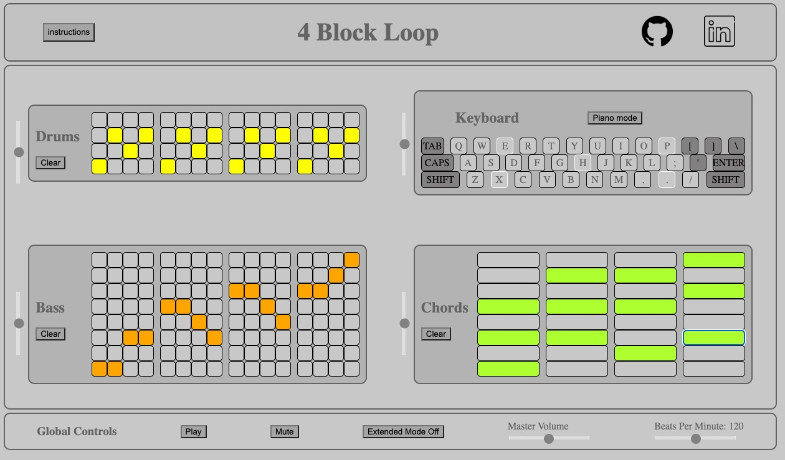

Alexander Kern
Software Engineer
See my work
4 Block Loop

A quick and easy music making notpad, consisting of 3 sequencers and a playable piano.
Kernify
A Spotify clone with a custom audio player, user created playlists (full CRUD functionality), and searchable tracks, playlists, albums and artists.
Mern Stack Paint
A drawing website where people can create drawings in the classic MS Paint style, and share them for others to add on to and collaborate with.
My name is Alex Kern and I am a fullstack engineer with experience in Javascript, React, Redux, Ruby on Rails, and Python. In my recent projects i have also utilized PostgreSQL, CSS3, HTML5 and AWS for file storage. Before entering the coding world, I earned a B.A. of Psychology from UC Santa Cruz in 2018, and spent some time working at a drug and alcohol rehabilitation center, as well as a few years as an apartment leasing specialist in the Bay Area. While leasing, I met quite a few software discovered a passion for computer programming after deciding to take a Python course at my local community college. After a few classes I decided to make the jump to enroll in App Academy, learning coding and web development full time.
During my time at App Academy, I was able to incorporate my interest in music into my projects, most notably in my javascript project, 4 Block Loop. This project utilized the Tone.js library as a stepping stone to incorporate synthesizer and audio playing functionality. I used vanilla javascript to create multiple sequencers (utilizing my new knowledge and understanding of object oriented programming and inheritance) as well as a piano playable using the computer keyboard.
In more recent projects, I worked primarily with React and Redux alongside Ruby on Rails to build out a full stack spotify clone, as well as a MERN stack group project about drawing and artistic collaboration, regardless of artistic ability. Both of these full stack projects are currently hosted on Heroku, available for everyone to check out.
I look forward to building more creative and interesting projects in the coming years, and hope to meet and work with some great people along the way!